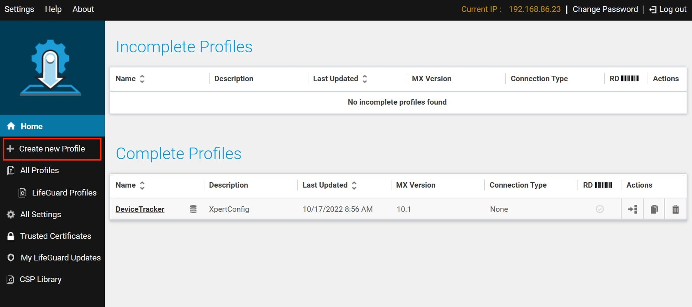
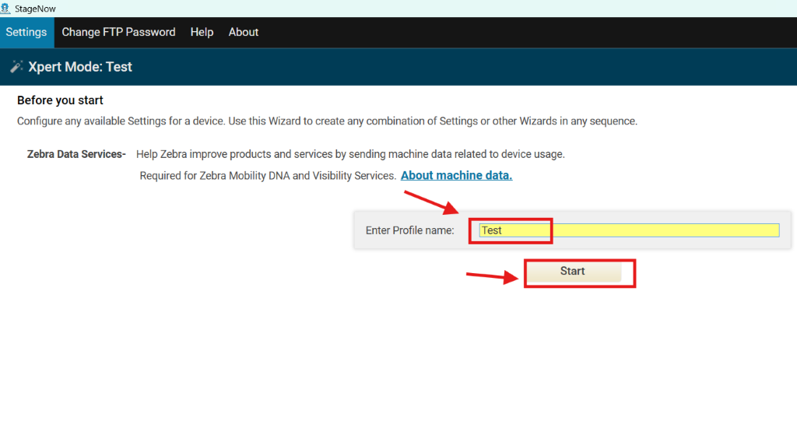
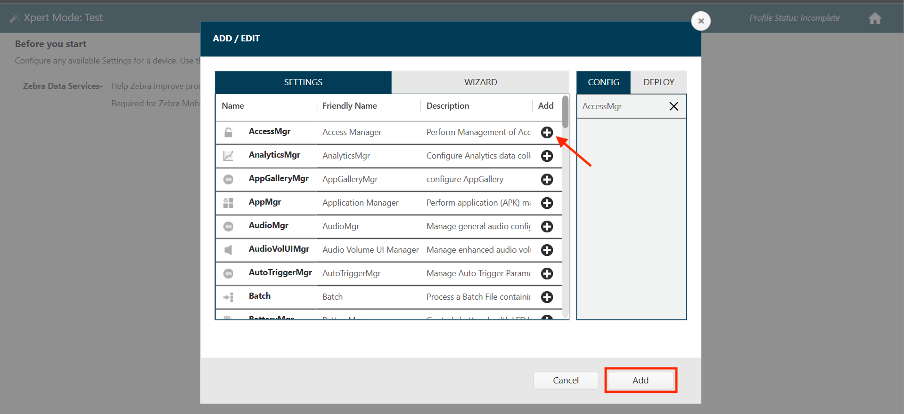
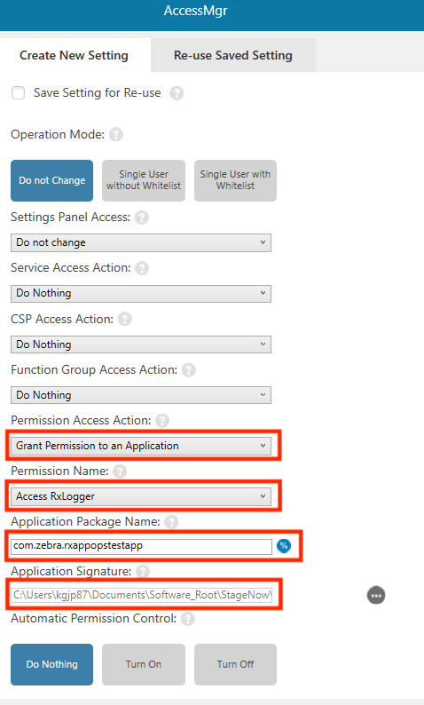
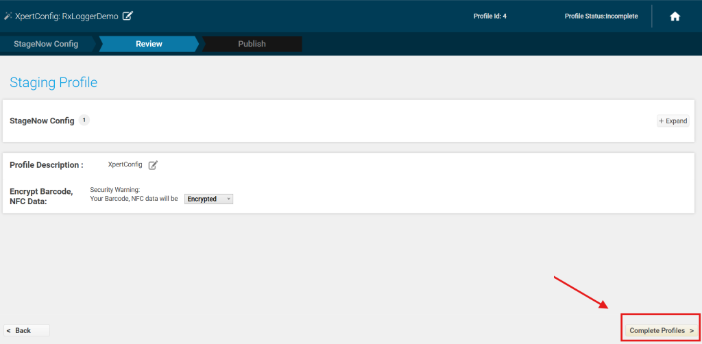
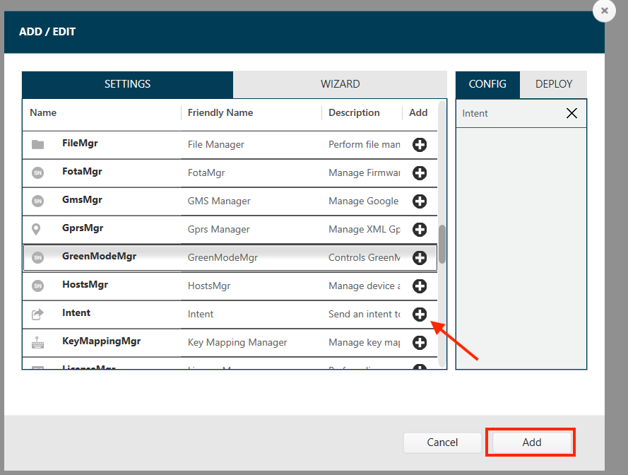
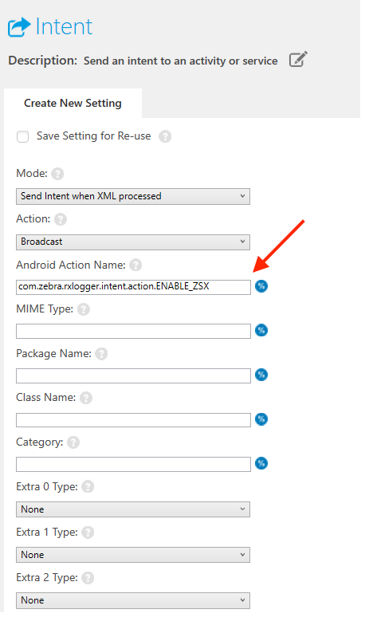
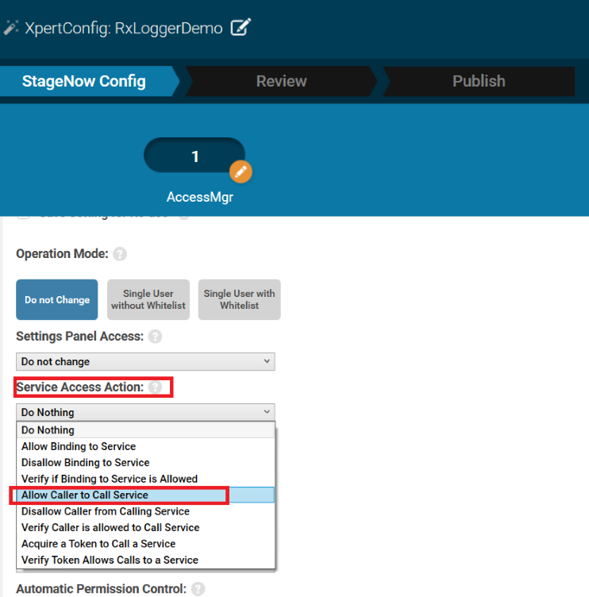
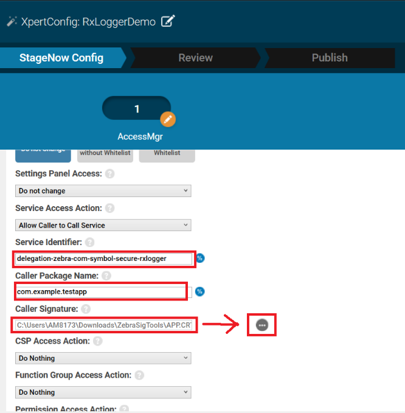

ADVISORY
In RxLogger v15.0.13.65, the application operates in Secure Mode by default, as standard mode is not operational. As a result, RxLogger only processes intents from third-party apps using the Permissions or Tokenization method; for secure deployment, see Deployment.Overview
The functionality of RxLogger can be managed through Android intents initiated from third-party applications. These intents can be processed using one of the following methods:
- Permissions Method (Recommended) - Uses Android's AppOpsManager to control access to RxLogger. It provides enhanced security by managing permissions for RxLogger operations.
- Tokenization Method - Requires an app token as an extra parameter within intents interact with RxLogger APIs.
Permissions Method
The Permissions Method extends Android's standard AppOps framework, offering a secure and controlled mechanism for interacting with RxLogger. It allows authorized applications to broadcast intents securely by granting custom permissions. Zebra recommends the Permissions Method over the Tokenization Method due to its simplicity and enhanced security.
I. Generate App Signature Certificate
An application signature for app certification is required for StageNow to configure Access Manager for your app. For reference and steps to generate the certificate, refer to App Signature in Access Manager.
For example, use the following steps to generate an app signature certificate encoded as a binary DER (.crt):
Download the App Signature Tool as a
.zipfile and extract the.jarfile.Open the command line interface (CLI). Navigate to the directory where the extracted
.jarfile is located.Generate the certificate. Execute the following command in the CLI to generate the certificate file encoded as a binary DER (
.crt). Replace<app_name>.apkwith the file path to your application's .APK and<cert_name>.crtwith the desired name of the output certificate file:java -jar SigTools.jar getcert -inform apk -outform der -in <app_name>.apk -outfile <cert_name>.crtThe
.crtfile is created in the folder specified in the command.
Important Notes:
- Ensure that the paths for
SigTools.jarand<app_name>.apkare correctly specified. Incorrect paths will result in errors.- The generated
.crtfile can be assigned any name by modifying<cert_name>.crtin the command.
II. AllowList Your App
Once the app signature certificate is generated, use StageNow to configure Access Manager and allowlist your app for RxLogger API access.
Steps to generate the StageNow profile:
Launch StageNow on the host computer.
In the StageNow home screen, click Create New Profile from the left menu. 
Perform the following:
- Select MX version 14.1 or higher. The MX version on the device should match this version selected. See MX documentation for instructions on how to check the version.
- Select Xpert Mode.
- Click Create.

Enter the desired profile name and click Start. 
Scroll down and click the plus (+) sign next to AccessMgr. This adds AccessMgr to the Config tab on the right side. Click Add. 
In the AccessMgr settings, enter/select the following, then scroll down and click Continue.:
- Permission Access Action: Grant Permission to an Application (To deny permission, select: "Deny Permission to an Application")
- Permission Name: Access RxLogger
- Application Package Name: [Enter your app package name]
- Application Signature: [Browse to your app signature certificate created from Step I above]

Click Complete Profile. 
The device must be connected to the network during deployment. Use one of the following methods based on the desired tool to deploy your application access permission:
- Barcode Staging: Generate the barcode from the StageNow profile. Open StageNow client on the device and scan the barcode.
- Local File Staging: Generate the .BIN file from the StageNow profile (NFC/SD/USB). Deploy the .BIN file to the device. Use StageNow client on the device to browse to the .BIN file and stage the device.
- EMM: Export the StageNow XML file from the StageNow installation. Send the XML using either OEMConfig or MX.
III. Grant App Permissions
For an application to broadcast secure intents to RxLogger, it must meet the following requirements:
The app must target Android API 33 or higher.
The following permission must be added to the
AndroidManifest.xmlfile:<uses-permission android:name="com.zebra.permission.ACCESS_RXLOGGER" />
Once this permission is granted, the application is authorized to send secure intents to RxLogger.
IV. Broadcast RxLogger Intent
Once the app token is created, Intent Manager can be leveraged to broadcast secure intents to RxLogger; see Intent Manager for more details.
Launch StageNow on the host computer.
In the StageNow home screen, click Create New Profile from the left menu.
Perform the following:
- Select MX version 14.1 or higher. The MX version on the device should match this version selected. See MX documentation for instructions on how to check the version.
- Select Xpert Mode.
- Click Create.
Enter the desired profile name and click Start.
Scroll down and click the plus (+) sign next to Intent. This adds Intent to the Config tab on the right side. Click Add. 
In the Intent settings, enter the following then click Continue:
- Android Action Name: [Enter the RxLogger intent, e.g.,
com.zebra.rxlogger.intent.action.ENABLE_ZSX]

- Android Action Name: [Enter the RxLogger intent, e.g.,
Click Complete Profile.
The device must be connected to the network during deployment. Use one of the following methods based on the desired tool to deploy your application signature certificate:
- Barcode Staging: Generate the barcode from the StageNow profile. Open StageNow client on the device and scan the barcode.
- Local File Staging: Generate the .BIN file from the StageNow profile (NFC/SD/USB). Deploy the .BIN file to the device. Use StageNow client on the device to browse to the .BIN file and stage the device.
- EMM: Export the StageNow XML file from the StageNow installation. Send the XML using either OEMConfig or MX.
Tokenization Method
The Tokenization Method allows an app to access to RxLogger APIs by utilizing an app token. To implement this method, the app's signature certificate must first be created and deployed to devices via Access Manager using StageNow. This process adds your app to RxLogger's allowlist, granting permission to invoke RxLogger APIs. An app token must be generated and included as a parameter when invoking RxLogger APIs.
I. Generate App Signature Certificate
An application signature certificate is required for StageNow to configure Access Manager for your app. For reference and steps to generate the certificate, refer to App Signature in Access Manager.
For example, use the following steps to generate an app signature certificate encoded as a binary DER (.crt):
Download the App Signature Tool as a
.zipfile and extract the.jarfile.Open the command line interface (CLI). Navigate to the directory where the extracted
.jarfile is located.Generate the certificate. Execute the following command in the CLI to generate the certificate file encoded as a binary DER (
.crt). Replace<app_name>.apkwith the file path to your application's .APK and<cert_name>.crtwith the desired name of the output certificate file:java -jar SigTools.jar getcert -inform apk -outform der -in <app_name>.apk -outfile <cert_name>.crtThe
.crtfile is created in the folder specified in the command.
Important Notes:
- Ensure that the paths for
SigTools.jarand<app_name>.apkare correctly specified. Incorrect paths will result in errors.- The generated
.crtfile can be assigned any name by modifying<cert_name>.crtin the command.
II. AllowList Your App
Once the app signature certificate is generated, use StageNow to configure Access Manager and allowlist your app for RxLogger API access.
Steps to generate the StageNow profile:
Launch StageNow on the host computer.
In the StageNow home screen, click Create New Profile from the left menu.
Perform the following:
- Select MX version 14.1 or higher. The MX version on the device should match this version selected. See MX documentation for instructions on how to check the version.
- Select Xpert Mode.
- Click Create.
Enter the desired profile name and click Start.
Scroll down and click the plus (+) sign next to AccessMgr. This adds AccessMgr to the Config tab on the right side. Click Add.
In the AccessMgr settings, enter/select the following:
- Service Access Action: Allow Caller to Call Service
- Service Identifier: delegation-zebra-com-symbol-secure-rxlogger
- Caller Package Name: [Enter your app package name]
- Caller Signature: [Browse to your app signature certificate created from Step I above]
  After selecting Allow Caller to Call Service, additional fields are made visible (e.g. Service Identifier, etc.). Scroll down and click Continue.

Click Complete Profile.
The device must be connected to the network during deployment. Use one of the following methods based on the desired tool to deploy your application signature certificate:
- Barcode Staging: Generate the barcode from the StageNow profile. Open StageNow client on the device and scan the barcode.
- Local File Staging: Generate the .BIN file from the StageNow profile (NFC/SD/USB). Deploy the .BIN file to the device. Use StageNow client on the device to browse to the .BIN file and stage the device.
- EMM: Export the StageNow XML file from the StageNow installation. Send the XML using either OEMConfig or MX.
III. Obtain App Token
After allowlisting your app, generate an app token to use with RxLogger APIs:
Download and import the library BroadcastProtectionLibrary.aar into your application project.
import com.zebra.security.broadcastprotection.BroadCastAuthenticator;Instantiate
BroadCastAuthenticatorin your activity, fragment or service.BroadCastAuthenticator vIntentprotect = new BroadCastAuthenticator();In the
onCreate()method, add the following:vIntentprotect.initialize(getApplicationContext(), new OnInitCallback() { @Override public void onInitialized() {} });Request the app token using the
getToken()method:String token = vIntentprotect.getToken("delegation-zebra-com-symbol-secure-rxlogger");
IV. Broadcast RxLogger Intent
Once the app token is created, RxLogger APIs can be invoked by sending intents with the token included as a parameter. Ensure your app targets Android API 33 or higher:
Broadcast the intent shown below, replacing
<your-app-token>with your application's security token and<rxlogger_intent>with the specific intent to invoke, such ascom.symbol.rxlogger.intent.action.ENABLE.Intent intent = new Intent(); intent.setAction("<rxlogger_intent>"); intent.putExtra("token", "<your-app-token"); sendBroadcast(intent);Terminate the
BroadCastAuthenticatorin theonDestroy()method:vIntentprotect.terminate();
Enable RxLogger
This initiates the data collection for all enabled modules. It is equivalent to tapping the Start button in the app.
To enable RxLogger, send an intent using one of the following methods:
Permissions (Recommended) - Use the following intent:
com.zebra.rxlogger.intent.action.ENABLE_ZSXTokenization - This method requires a security token; see III. Obtain App Token. Broadcast the intent shown below, replacing
<your-app-token>with your application's security token.intent.setAction("com.symbol.rxlogger.intent.action.ENABLE"); intent.putExtra("token", "<your-app-token>"); sendBroadcast(intent);
Enable Status
The ENABLE_STATUS intent notifies the third-party app that RxLogger has started capturing logs. This acknowledgment is sent by RxLogger once it transitions to the running state.
Intent:
com.symbol.rxlogger.intent.action.ENABLE_STATUS
Extras included in the intent:
| Extra | Values |
|---|---|
| result | 0 -1 |
| status | success failure |
| error_code | 0 1 |
| message | Enable RxLogger Success Intent failed, RxLogger already in running state |
Disable RxLogger
This stops data collection for all modules. It is the equivalent of tapping the Stop button in the app.
To stop RxLogger, using one of the following methods:
Permissions (Recommended) - Use the following intent:
com.zebra.rxlogger.intent.action.DISABLE_ZSXTokenization - This method requires a token, which can obtained by following section III. Obtain App Token. Use the following intent:
intent.setAction("com.symbol.rxlogger.intent.action.DISABLE"); intent.putExtra("token", "<token>"); sendBroadcast(intent);Replace
<token>with the token obtained from the tokenization process.
Disable Status
This informs the third-party app that RxLogger has stopped capturing logs. RxLogger sends this acknowledgment intent once it stops log capture.
Intent:
com.symbol.rxlogger.intent.action.DISABLE_STATUS
Extras included in the intent:
| Extra | Values |
|---|---|
| result | 0 -1 |
| status | success failure |
| error_code | 0 1 |
| message | Disable RxLogger Success Intent failed, RxLogger already in running state |
BackupNow
BackupNow initiates the collection of log files compressed into a password-protected .zip file with the naming format SecureBackup-<date>-<HHMMSS>.zip, where <date>-<HHMMSS> represents the timestamp of the backup and stores it in the RxLogger folder.
The password for the .zip file must meet the following requirements:
- At least 8 characters long
- Contain at least one uppercase letter
- Contain at least one lowercase letter
- Include at least one digit
- Include at least one special character, such as
@#$%^&*+-=!.
To trigger a backup, an intent can be sent from a third-party application using one of the following methods:
Permissions (Recommended) - Use the following intent action, replacing
<password>with the desired password that meets the criteria above:com.zebra.rxlogger.intent.action.BACKUP_NOW_ZSXTokenization - This method requires a security token; see III. Obtain App Token. Broadcast the intent shown below, replacing
<your-app-token>with your application's security token and<password>with the desired password that meets the criteria above.intent.setAction("com.symbol.rxlogger.intent.action.BACKUP_NOW"); intent.putExtra("token", "<your-app-token>"); intent.putExtra( "password", "<password>"); sendBroadcast(intent);
When accessing the backup .zip file, users are prompted to enter the password initially set for the file.
BackupNow Status
This provides the status of the backup operation. RxLogger sends an acknowledgment intent to convey the backup status.
Intent:
com.symbol.rxlogger.intent.action.BACKUP_NOW_STATUS
Extras returned from the intent include: result, status, error_code, message & filepath.
| error_code | result | status | message | filepath |
|---|---|---|---|---|
| 0 | 0 | success | Rx Backup Success | /<RxLogger_Path>/SecureBackup-<date>-<HHMMSS>.zipThe <RxLogger_Path> placeholder represents one of the following:
|
| 1 | -1 | failure | Intent failed, Backup is currently running | N/A |
| 2 | -1 | failure | Invalid/Empty Password | N/A |
| 3 | -1 | failure | Failed to get User Handle from dd service | N/A |
| 4 | -1 | failure | Failed to copy backup file to U10 storage | N/A |
| 5 | -1 | failure | Failed to delete file in U0 path | N/A |
| 6 | -1 | failure | Zipping of secure files failed | N/A |
Deploy Config
To deploy a custom configuration file to RxLogger, an application must first broadcast an intent for deployment. After the broadcast, the file must be copied to the RxLogger storage path within 60 seconds, otherwise the operation may time out and fail. The successful application of the new configuration can be validated in the RxLogger Settings user interface.
Deployment Workflow:
Broadcast Deployment Intent - Use one of the following methods:
Permissions (Recommended) - This is the simpler method. Use the following intent action:
com.zebra.rxlogger.intent.action.DEPLOY_CONFIG_ZSXTokenization - This method requires a security token; see III. Obtain App Token. Broadcast the intent shown below, replacing
<your-app-token>with your application's security token.intent.setAction("com.symbol.rxlogger.intent.action.DEPLOY_CONFIG"); intent.putExtra("token", "<your-app-token>"); sendBroadcast(intent);
Deploy the file - Within 60 seconds of the broadcast, copy the configuration file to the appropriate RxLogger storage path.
Storage Type Android API to Retrieve Path Example Final Path Internal Storage Environment.getExternalStorageDirectory()/storage/emulated/0/RxLogger External Storage (e.g., SD Card) ContextCompat.getExternalFilesDirs()/storage/1A2B-3C4D/RxLogger
Status
This informs the third-party app that RxLogger has deployed the configuration file.
Intent:
com.symbol.rxlogger.intent.action.DEPLOY_CONFIG_STATUS
Extras returned from the result include the following:
| error_code | result | status | message |
|---|---|---|---|
| 0 | 0 | success | Rx Deploy Config Success |
| 1 | -1 | failure | Deploy Config already received waiting for config file to push |
| 2 | -1 | failure | Deploy Config timeout, no config found after 1 min |
| 3 | -1 | failure | Failed to deploy config file |
Get RxLogger State
Get RxLogger State retrieves the current security state of RxLogger, allowing applications to determine which intent method to use. The returned state is one of the following values:
- secure-cope - Indicates the device is in Work Profile or Corporate-Owned, Personally-Enabled (COPE) mode. Intents must be sent using either secure method: Permissions or Tokenization.
- secure - Indicates the device requires secure communication from all apps. Intents must be sent securely using either the the Permissions or Tokenization method.
- legacy - Indicates RxLogger is in legacy mode (e.g., Android 14 or older) where intent authentication is not required. Use standard legacy intents.
To get the RxLogger state, use one of the following methods:
Permissions (Recommended) - Use the following intent:
com.zebra.rxlogger.intent.action.GET_RX_STATE_ZSXTokenization - This method requires a security token; see III. Obtain App Token. Broadcast the intent shown below, replacing
<your-app-token>with your application's security token.intent.setAction("com.symbol.rxlogger.intent.action.GET_RX_STATE"); intent.putExtra("token", "<your-app-token>"); sendBroadcast(intent);
Status
This informs the third-party app that RxLogger has retrieved the RxLogger state.
Intent:
com.symbol.rxlogger.intent.action.GET_RX_STATE_STATUS
Extras returned from the result include the following:
| error_code | result | status | message |
|---|---|---|---|
| 0 | 0 | success | secure-cope |
| 0 | 0 | success | secure |
| 0 | 0 | success | legacy |
| 3 | -1 | failure | Failed to get RxLogger State |
Delete Logs
Delete Logs removes all logs stored in the RxLogger folder.
To delete logs, send an intent using one of the following methods:
Permissions (Recommended) - Use the following intent:
com.zebra.rxlogger.intent.action.DELETE_LOGS_ZSXInclude the
logTypeextra parameter to specify the type of files to remove:- 0 - Deletes all files in the RxLogger folder, including both logs and backups, except for
config.jsonandRxInfo.txt. - 1 - Deletes only the log files while retaining the backup files.
- 2 - Deletes only the backup files while retaining the log files.
- 0 - Deletes all files in the RxLogger folder, including both logs and backups, except for
Tokenization - This method requires a security token; see III. Obtain App Token. Broadcast the intent shown below, replacing
<your-app-token>with your application's security token and<logtype>with the type of file to delete:0 - Deletes all files in the RxLogger folder, including both logs and backups, except for
config.jsonandRxInfo.txt.1 - Deletes only the log files while retaining the backup files.
2 - Deletes only the backup files while retaining the log files.
intent.setAction("com.symbol.rxlogger.intent.action.DELETE_LOGS"); intent.putExtra("token", "<your-app-token>"); intent.putExtra( "logType", "<logtype>"); sendBroadcast(intent);
Status
This intent notifies the third-party app that the RxLogger logs have been deleted. RxLogger issues this acknowledgment after completing the deletion process.
Intent:
com.symbol.rxlogger.intent.action.DELETE_LOGS_STATUS
Extras returned from the result include the following:
| error_code | result | status | message |
|---|---|---|---|
| 0 | 0 | success | N/A |
| 1 | -1 | failure | Intent failed, Delete Logs currently running |
| 2 | -1 | failure | RxLogger running, Cannot delete its log |
Bug Report
Generate a Bug Report containing comprehensive diagnostic information to aid in troubleshooting and performance analysis. The report is saved as a .ZIP file in a secure storage location that is not directly accessible. To access it, use BackupNow, which exports the file as a password-protected and accessible version.
To create a bug report, send an intent using one of the following methods:
Permissions (Recommended) - Use the following intent action:
com.zebra.rxlogger.intent.action.DEPLOY_CONFIG_ZSXTokenization - This method requires a security token; see III. Obtain App Token. Broadcast the intent shown below, replacing
<your-app-token>with your application's security token.intent.setAction("com.symbol.rxlogger.intent.action.RX_BUGREPORT"); intent.putExtra("token", "<your-app-token>"); sendBroadcast(intent);
Status
This intent alerts the third-party app that RxLogger has successfully generated the bug report. RxLogger issues this acknowledgment once the bug report is generated.
Intent:
com.symbol.rxlogger.intent.action.RX_BUGREPORT_STATUS
Extras returned from the result include the following:
| error_code | result | status | message |
|---|---|---|---|
| 0 | 0 | success | N/A |
| 1 | -1 | failure | Intent failed, Bugreport currently running |
| 2 | -1 | failure | Copy Bugreport file from source to RxLogger folder failed |
| 3 | -1 | failure | Bugreport file not generated at source |
Reset to Default
Reset to Default restores all RxLogger settings to their default values across all modules.
To perform a reset to default RxLogger settings, send an intent using one of the following methods:
Permissions (Recommended) - Use the following intent action:
com.zebra.rxlogger.intent.action.RESET_TO_DEFAULT_ZSXTokenization - This method requires a security token; see III. Obtain App Token. Broadcast the intent shown below, replacing
<your-app-token>with your application's security token.intent.setAction("com.symbol.rxlogger.intent.action.RESET_TO_DEFAULT"); intent.putExtra("token", "<your-app-token>"); sendBroadcast(intent);
Status
This intent notifies the third-party app that RxLogger settings have been restored to their default state. RxLogger dispatches this acknowledgment intent upon completing the reset process.
Intent:
com.symbol.rxlogger.intent.action.RESET_TO_DEFAULT_STATUS
Extras returned from the result include the following:
| error_code | result | status | message |
|---|---|---|---|
| 0 | 0 | success | N/A |
| 1 | -1 | failure | Intent failed, Reset to default currently running |
| 2 | -1 | failure | RxLogger running, cannot do reset to default |
Related Links
- About RxLogger - Provides an overview of RxLogger
- Settings - Guides how to configure settings and modules
- User Guide - Provides instrucdtions on using RxLogger